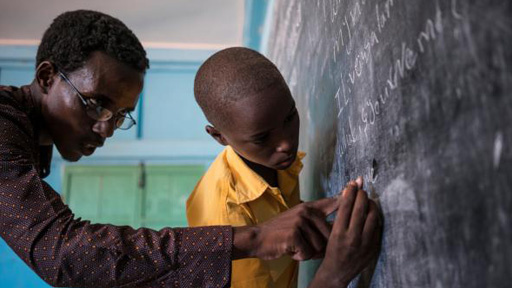
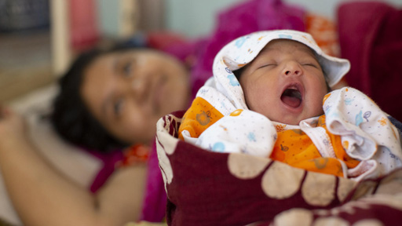
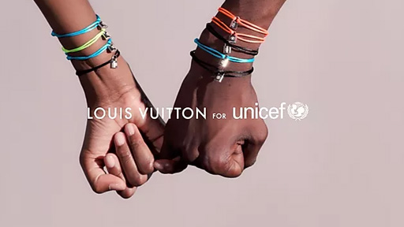
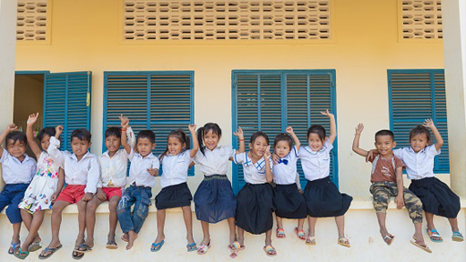

아동권리활동
활동
아동권리교육
한국위원회는 아동권리 확산을 위한 캠페인을 진행하고, 어린이가 자신의 권리를 배우고, 지구촌 어린이의 상황을 이해하도록 다양한 교육자료를 발간해 배포합니다.
교육에서 지켜야 하는 아동권리 조항
- 제 12조
- 의견존중의 자유
- 제 13조
- 표현의 자유
- 제 15조
- 모임의 자유
- 제 28조
- 인격을 존중하는 교육
- 제 29조
- 교육의 목적
- 제 31조
- 여가와 놀이
모유수유권장
유니세프한국위원회는 모유수유 권장을 위해 전문가들로 구성된 아기에게 친근한 병원 만들기 자문기구를 두고 1993년부터 매년 모유수유를 권장하고 실천하는 '아기에게 친근한 병원'을 임명하며, 연 3~4회 성공적인 모유수유를 위한 의료요원 교육을 실시하고 있습니다.
성공적인 모유수유 10단계
- 1단계
- 병원은 의료요원을 위한 모유수유 정책을 문서화 한다.
- 2단계
- 모든 의료요원에게 모유수유 기술을 훈련시킨다.
- 3단계
- 엄마젖의 장점과 젖먹이는 방법을 임산부에게 교육시킨다.
- 4단계
- 출생 후 30분 이내에 엄마젖을 빨리기 시작한다.
- 5단계
- 임산부에게 엄마젖을 먹이는 방법과 아기와 떨어져 있을 때 젖분비를 유지하는 방법을 자세히 가르친다.
- 6단계
- 갓난 아기에게 엄마젖 이외의 다른 음식물을 주지 않는다.
- 7단계
- 엄마와 아기는 하루 24시간 같을 방을 쓴다.
- 8단계
- 엄마젖은 아기가 원할 때마다 먹인다.
- 9단계
- 아기에게 인공 젖꼭지나 노리개 젖꼭지를 물리지 않는다.
- 10단계
- 엄마젖 먹이는 모임을 만들도록 도와주고 퇴원 후 모임에 참여하도록 해준다.
아동친화기업
아동권리와 경영원칙(CRBP)은 아동의 권리와 삶의 질에 끼치는 기업의 영향을 이해하고 고민하기 위한 포괄적인 틀을 제공해 줍니다. 지금까지 아동에 대한 기업의 책임은 대개 아동노동을 예방하거나 금지하는 데 초점을 두었습니다. 그러나 '아동권리와 경영원칙'은 아동노동을 예방하거나 근절하기 위해 필요한 기준과 조치를 강화하는 동시에 기업이 아동에게 끼치는 다양한 방식의 영향에 대해서도 강조합니다.
기업이 수행해야할 활동
- 기업의
존중 책임 - 기업의
지원 약속
유니세프 아동친화 기업은...
- 아동권리 존중의 책임을 다하며, 아동권리를 지원할 것을 약속합니다.
- 모든 기업 활동과 사업 관계에서 아동노동 철폐에 기여해야 합니다.
- 연소근로자와 부모, 양육자에게 적당한 일자리를 제공합니다.
- 안전보장조치에 있어서 아동의 권리를 존중하고 지원해야 합니다.
- 긴급상황의 영향을 받는 아동을 보호하도록 도와야 합니다.
아동친화도시
유니세프 아동친화도시(Child Friendly Cities)는 18세 미만 모든 어린이가 살기 좋은 도시로 유엔아동권리협약의 기본정신을 실천하는 지역사회를 말합니다. 전 세계적으로 1,300개 이상의 도시가 아동친화도시로 인증 받았으며, 한국에서는 서울 성북구가 2013년 11월 20일 최초의 아동친화도시로 인증 받았습니다.
아동친화도시 비전
모든 아동이 아동기를 행복하게 지내고, 공평한 기회를 통해 잠재력을 최대한으로 발휘할 수 있는 지역사회를 만드는 것
아동친화도시에 사는 어린이는...
- 자유롭게 친구들을 만나서 즐겁게 놉니다.
- 맑은 공기를 마시며, 깨끗한 환경에서 삽니다.
- 장애를 가진 아동도 똑같이 존중 받습니다.
- 의료와 교육서비스를 누리는 것은 기본입니다.
- 거리를 다닐 때 안전하다고 느낍니다.